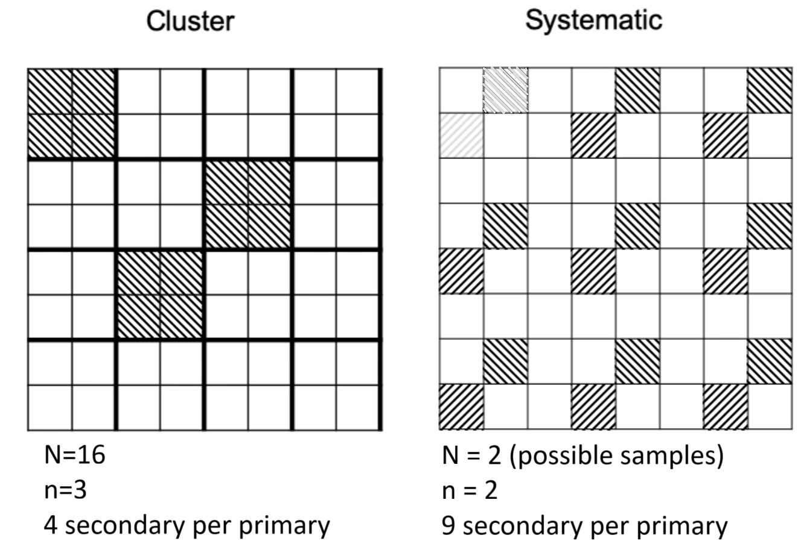
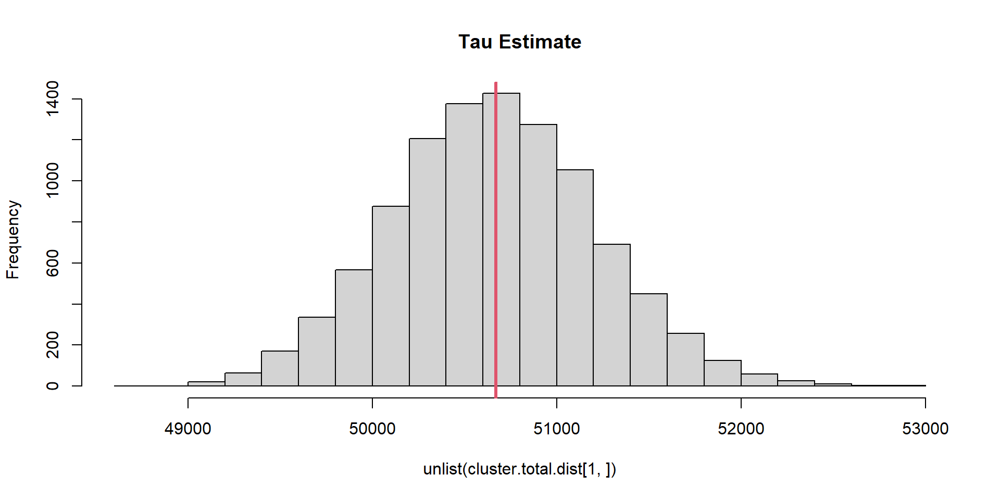
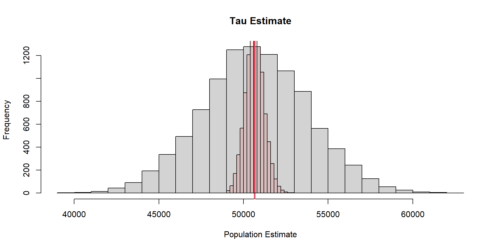
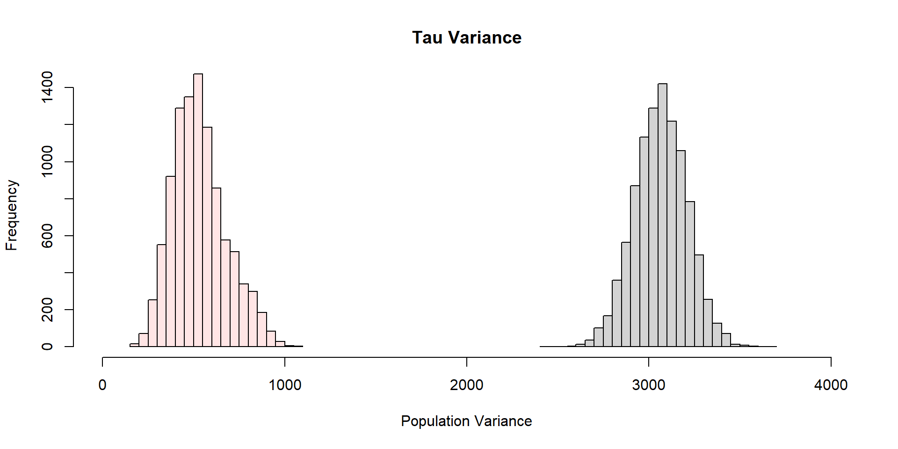
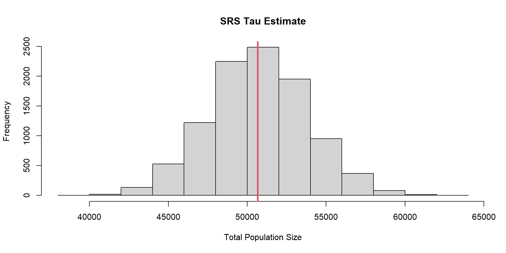
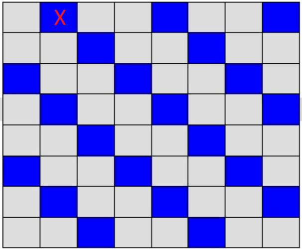

| Pond | egg.mass | cluster |
|---|---|---|
| A | 2 | 1 |
| B | 6 | 2 |
| C | 8 | 1 |
| D | 10 | 2 |
| E | 10 | 3 |
| F | 12 | 3 |
Cluster/Systematic Sampling
Cluster and systematic sampling
Appear to be opposites
- Cluster: units are clumped together
- Systematic: units spaced out
Both partition sampling into primary and secondary units
- Cluster: primary units consist of cluster of secondary
- Systematic: primary unit consists of secondary units that are arranged via a rule set
Cluster and systematic sampling
Boreal Toad Case Study
- N = 6
- \(\mu =8\)

Boreal toad
Cluster sampling scheme A
| clusterA | member1 | member2 | mean | dev2 |
|---|---|---|---|---|
| 1 | 2 | 8 | 5 | 9 |
| 2 | 6 | 10 | 8 | 0 |
| 3 | 10 | 12 | 11 | 9 |
\[\sum_{i=1}^3(\hat{\mu}_{i}-\mu) = 0 \]
Boreal toad
Cluster sampling scheme A
| clusterA | member1 | member2 | mean | dev2 |
|---|---|---|---|---|
| 1 | 2 | 8 | 5 | 9 |
| 2 | 6 | 10 | 8 | 0 |
| 3 | 10 | 12 | 11 | 9 |
\[ \hat{\sigma}^{2} = \frac{1}{3}\sum_{i=1}^{n} \left(\hat{\mu}_{i}-\mu\right)^{2} = 6\\ \]
Recall that the variance for SRS was 4.26
Cluster Sampling
Superficial resemblance to stratification: ‘clustered’ sample units are grouped like a stratum
Selection process is different
- stratification: every strata is part of the sampling process
- not all units in each strata are sampled
- cluster: select among clusters in same way as SRS
- then observe all units within cluster
Cluster sampling is really SRS applied to groups of population members
Cluster sampling scheme B
Make cluster of similar values
| Pond | egg.mass | clusterB |
|---|---|---|
| A | 2 | 1 |
| B | 6 | 1 |
| C | 8 | 2 |
| D | 10 | 2 |
| E | 10 | 3 |
| F | 12 | 3 |
Cluster sampling scheme B
| clusterB | member1 | member2 | mean | dev2 |
|---|---|---|---|---|
| 1 | 2 | 6 | 4 | 16 |
| 2 | 8 | 10 | 9 | 1 |
| 3 | 10 | 12 | 11 | 9 |
\[\sum_{i=1}^3(\hat{\mu}_{i}-\mu) = 0 \]
Cluster sampling scheme B
| clusterB | member1 | member2 | mean | dev2 |
|---|---|---|---|---|
| 1 | 2 | 6 | 4 | 16 |
| 2 | 8 | 10 | 9 | 1 |
| 3 | 10 | 12 | 11 | 9 |
\[ \hat{\sigma}^{2} = \frac{1}{3}\sum_{i=1}^{n} \left(\hat{\mu}_{i}-\mu\right)^{2} = 8.67 \]
Cluster sampling scheme C
Make clusters of dissimilar values
| Pond | egg.mass | clusterC |
|---|---|---|
| A | 2 | 1 |
| B | 6 | 2 |
| C | 8 | 3 |
| D | 10 | 3 |
| E | 10 | 2 |
| F | 12 | 1 |
Cluster sampling scheme C
Make clusters of dissimilar values
| clusterC | member1 | member2 | mean | dev2 |
|---|---|---|---|---|
| 1 | 2 | 12 | 7 | 1 |
| 2 | 6 | 10 | 8 | 0 |
| 3 | 8 | 10 | 9 | 1 |
\[\sum_{i=1}^3(\hat{\mu}_{i}-\mu) = 0 \]
Cluster sampling scheme C
Make clusters of dissimilar values
| clusterC | member1 | member2 | mean | dev2 |
|---|---|---|---|---|
| 1 | 2 | 12 | 7 | 1 |
| 2 | 6 | 10 | 8 | 0 |
| 3 | 8 | 10 | 9 | 1 |
\[ \hat{\sigma}^{2} = \frac{1}{3}\sum_{i=1}^{n} \left(\hat{\mu}_{i}-\mu\right)^{2} = 0.67 \]
Cluster sampling scheme D
Clusters of dissimilar values and size
| Pond | egg.mass | clusterD |
|---|---|---|
| A | 2 | 1 |
| B | 6 | 1 |
| C | 8 | 1 |
| D | 10 | 2 |
| E | 10 | 2 |
| F | 12 | 3 |
Cluster sampling scheme D
Clusters of dissimilar values and size
| clusterD | member1 | member2 | member3 | mean |
|---|---|---|---|---|
| 1 | 2 | 6 | 8 | 5.33 |
| 2 | 10 | 10 | NA | 10.00 |
| 3 | 12 | NA | NA | 12.00 |
- mean(c(5.33,10,12)) = 9.11
- 9.11 - 8 = 1.11 (biased)
Cluster sampling scheme D
Need to incorporate cluster size
| clusterD | mean | clusterSize | SizeXMean | divide.avg.cluster.size | dev2 |
|---|---|---|---|---|---|
| 1 | 5.33 | 3 | 16 | 8 | 0 |
| 2 | 10.00 | 2 | 20 | 10 | 4 |
| 3 | 12.00 | 1 | 12 | 6 | 4 |
- mean(c(8,10,6)) = 8
- 8 - 8 = 0 (unbiased)
- \(\hat{\sigma}^{2} = 2.67\)
Variable-sizeed clusters
We randomly select the primary units
- the number of secondary units may be quite different and not in our control (i.e., random variable)
You want to know something about households
- sample home addresses (building is cluster; primary unit)
- the number of secondary units depends on building type
- single-family house, condo/duplex, apartment complex
Cluster sampling
- Maximize precision by forming clusters that have varying values within secondary units
- Overall cluster values (e.g., mean) are similar (aggregated secondary units)
But….
In our field we often think of forming clusters by location
First Law of Geography: “everything is related to everything else, but near things are more related than distant things.” - Waldo Tobler
This contradicts the principal and utility of cluster sampling.
Cluster sampling
But also need to consider costs b/w SRS and cluster.
Which do you think is more likely to less costly?
Pika Case Study
We are interested in the total population size of pika across 10 mountains
Pika Case Study
Goal: Compare Cluster and SR sampling
- 10 Mtns
- Each mtn can be divide into 100 plots based on talus slopes (piles of rocks and boulders)
- a total (N) of 10 x 100 sample units (in a SRS sense).
- we expect the most deviation to occur across mountains, rather than in them.
- we will cluster our samples across mountains (aggregate plots across mtns)
Pika Case Study
# Simulate a true population
N.plots= 100 # talus slope plots
N.mtns= 10 # mtns
# Create matrix of counts
pop = matrix(NA, N.plots, N.mtns)
# Consider each mtn has a different mean abundance
# This forces the mtns to vary in pika abundance
mu = seq(1,100,length.out = N.mtns)
# Loop over each mountain and draw N.plots random values from that specific mean
# log transform the mean and the exponentiate then round to make them counts
# and to ensure values are never negative
for(j in 1:N.mtns){
set.seed(143453543+j)
pop[,j] = round(
exp(
rnorm(N.plots,
log(mu[j]),
0.1
)
),
digits=0
)
}Pika Case Study
- SRS \(n = 100\) random units
Pika Case Study
- clusters are columns
Pika Case Study
- \(N_\text{Primary Cluster} = 100\) with \(N_\text{Secondary} = 10\)
- \(n_\text{Primary Cluster} = 10\) with \(N_\text{Secondary} = 10\)
Pika Case Study
The same number of total units are sampled: 100
\(\mu =\) 50.67
\(\tau =\) 50670
Setup Simulation
SRS
#Number of simulated studies / replicate samples
n.sim= 10000
# Create SRS function
srs.fun = function(pop){
# Get a sample of indices
index=sample(1:(N.plots*N.mtns),size=n)
# Use those indices to get our population counts in each sample unit
y = c(pop)[index]
#Total estimate
tau.est=mean(y)*N
#Standard deviation of total
tau.sd=sqrt(N*(N-n)*(var(y)/n))
list(tau.est=tau.est,
tau.sd=tau.sd)
}
# replicate!
srs.total.dist=replicate(n.sim, srs.fun(pop))SRS
\(\sigma_{\hat{\tau},SRS} =\) 3109.66
Cluster
cluster.fun = function(pop){
#Get index of plots (clusters) to sample across mtn rnages and sample all within that cluster
index=sample(1:N.primary, size = 10)
y = pop[index,] # this is 10x10 (total of 100 sample units)
y.sum = apply(y,1,sum)
tau.est = N.primary*mean(y.sum)
#Standard deviation of total
var.primary= var(y.sum)
tau.sd = sqrt(N.primary*(N.primary-N.secondary)*(var.primary/N.secondary))
list(tau.est=tau.est,
tau.sd=tau.sd)
}
# Replicate!!!!
cluster.total.dist=replicate(n.sim, cluster.fun(pop))Cluster

\(\sigma_{\hat{\tau},Cluster} =\) 554.26
SRS vs Cluster
SRS vs Cluster

Why did Clusters work so well?
Thompson pg. 137: “The relative efficiency of the cluster (or systematic) sample to the simple random sample of equivalent sample size, defined as the ratio of variances”,
\[ \frac{\text{var}(\tau_{srs})}{\text{var}(\tau_{\mu})} = \frac{\text{var}(\text{across all values in population})}{\text{var}(\text{across secondary units})} \]
Numerator
[1] 1045.07Denominator
[1] 342.1313Take home
Cluster sampling will lead to more precise estimates than SRS (at the same sample size) when units within clusters vary more than on average than do the units in the whole sampling frame.
The greater variation within clusters, the grater precision of cluster sampling; opposite of stratified sampling
Take home
Beware
Clusters require good knowledge of the system.
A poor choice could lead to increasing sampling distribution variance.
Systematic Sample
Black-footed ferret breeding program for release into the wild.
- 10 groups of 10 animals (separate colonies)
- each as a number 1 to 10
Systematic Sample
How do we choose which two individuals to release into the wild?
- randomly select a number… 3
- randomly select a new number w/o replacement… 7
You systematically have selected individual 3 and 7 for release from each colony/group.
Systematic Sample
- people like the “spatial balance”
Systematic Sample
- Can be biased
- plots may be more dissimilar than random
- mean is unbiased
- variance is too large
- periodicity (ridge/valley/ridge…)
- mean is biased
- variance is underestimated
- plots may be more dissimilar than random